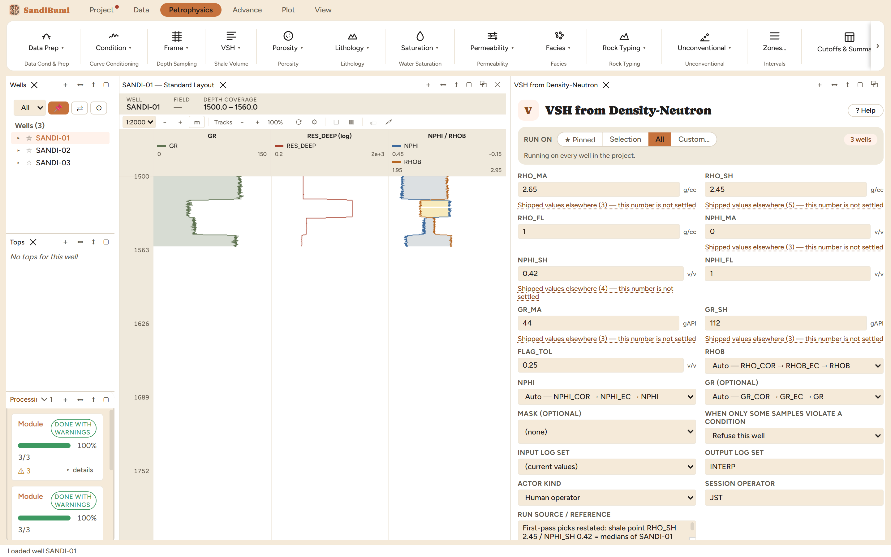

Shale volume from the density-neutron crossplot: the (RHOB, NPHI) point's position between the clean matrix line and the shale point. Reach for it where the gamma ray is untrustworthy (hot clean sands rich in feldspar or mica, uranium-bearing intervals), or as the independent second indicator that keeps the GR estimate honest. The two logs see shale through a different physics (hydrogen and density rather than radioactivity), which is precisely what makes the comparison informative.
The crossplot solves the point's normalized distance between the matrix line and the shale point (the determinant form in the equations above). The load-bearing caution is the neutron shale endpoint: the neutron's shale response is hydroxyl-driven, so NPHI_SH is clay-type sensitive. A 4-OH clay (illite, smectite) separates density and neutron by roughly 12 porosity units; a 2-OH clay (kaolinite family) by roughly 3. One number stands in for that whole range, so the module carries its own alarm: where the crossplot VSH and the gamma-ray VSH disagree by more than FLAG_TOL, the sample is flagged in VSH_DN_FLAG.
0 clean · 3 degraded. As in the gamma-ray chapter, degraded means clamped-and-counted: 90 samples per well computed outside [0, 1] and were limited. Median VSH_DN 0.7094, reading above the gamma ray's 0.5415: the crossplot sees bound water and hydroxyl the GR index does not. 277 samples flagged where the two indicators disagree by more than 0.25:
SELECT COUNT(*) FILTER (WHERE value = 1) FROM computed_curves WHERE curve_name = 'VSH_DN_FLAG'
Then the clay-type dial, demonstrated live: NPHI_SH moved from 0.42 to 0.30 (toward the low-hydroxyl end of the clay range) pushes the unlimited VSH_DN median to 1.1856 (over half the section now computes more than 100% shale), and the flag count explodes from 277 to 1145 of the 1185 samples. That is the flag doing its job: a shale point inconsistent with the rock makes the crossplot diverge from the GR almost everywhere, and the module says so per sample rather than shipping a plausible-looking wrong curve. Restored to 0.42, every number returns exactly.
